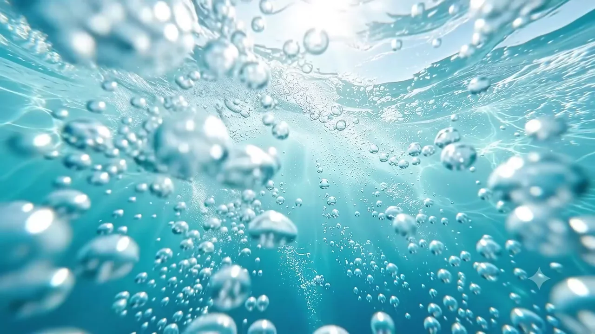
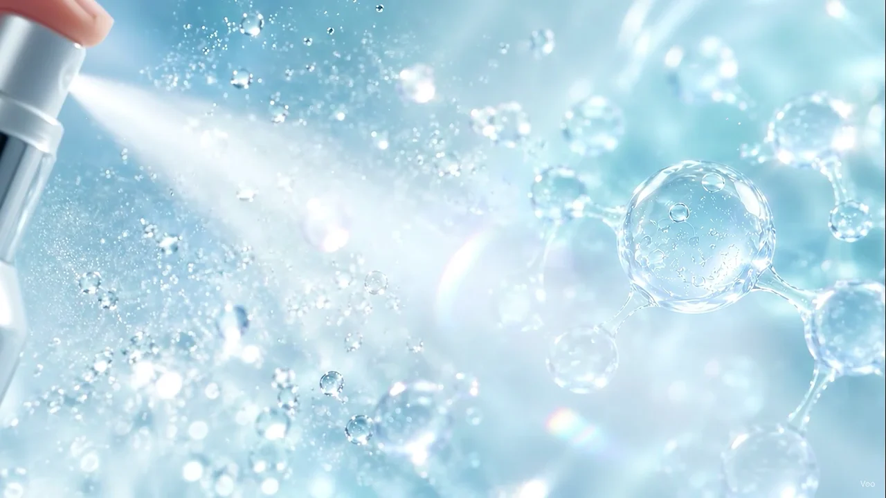
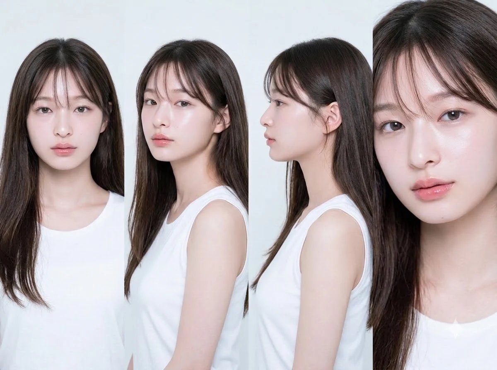
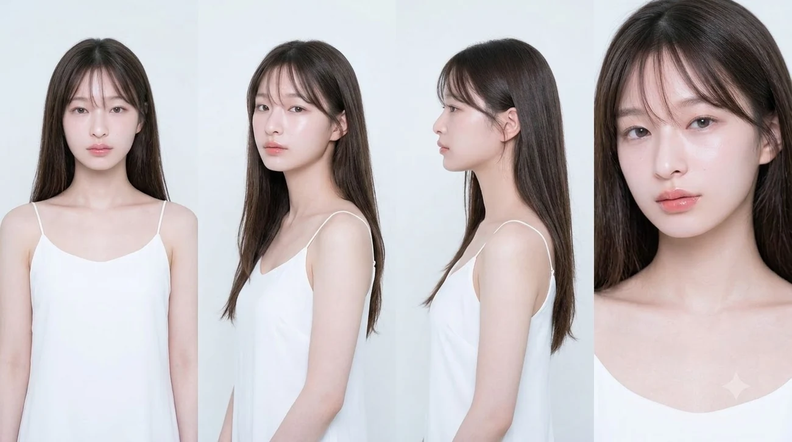
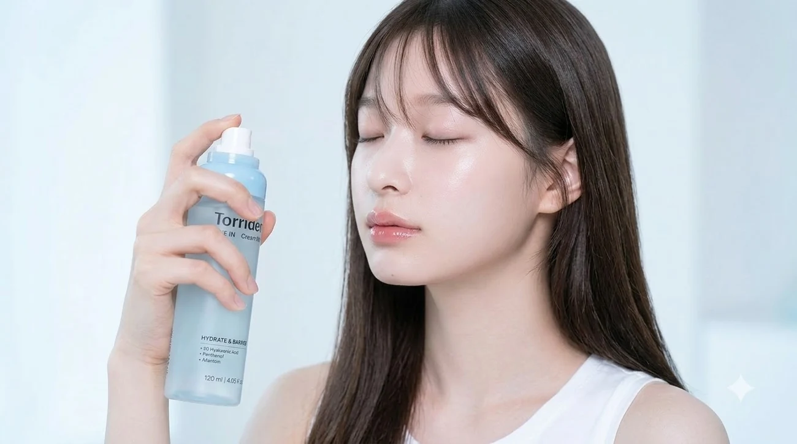
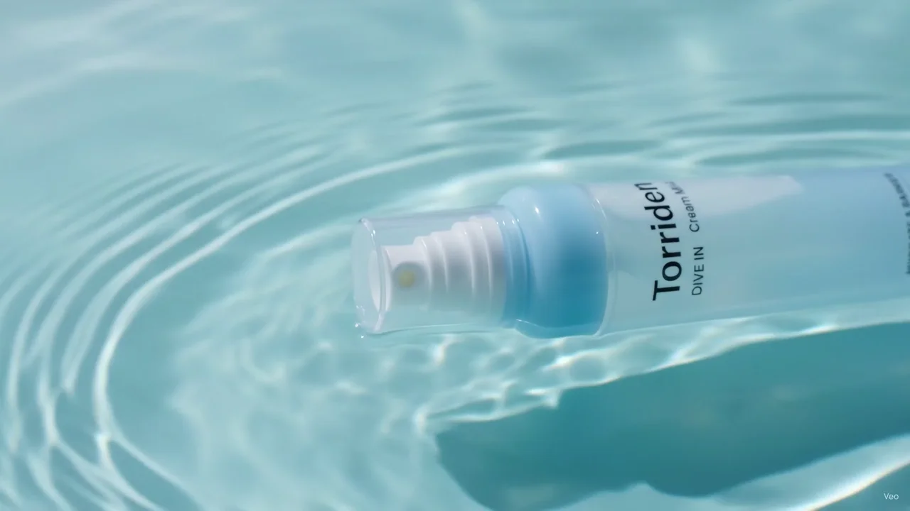

DIVE INTO HYDRATION
수면 아래로
OVERVIEW
분사에서
수분감으로
미스트를 쓰는 순간의 촉촉함을 화면에서 어떻게 느끼게 할 수 있을까. 모델이 제품을 쓰는 장면으로 시작해 물방울과 수중의 빛으로 감각을 확장하고, 마지막 제품 컷에서 그 인상을 브랜드에 연결했습니다.
기획 타깃 · 짧은 뷰티 영상으로 제품을 처음 접하는 스킨케어 소비자
FINAL OUTCOME
24초 광고 영상
모델의 미스트 분사에서 시작해 수중의 기포, 물속의 모델, 수면 위 제품을 거쳐 제품명과 정면 병 이미지로 마무리됩니다.
FINE MIST
한 번의 분사,
빛에 흩어지는 수분
RESEARCH & CONCEPT
빛과 입자로
투명함을 설계
아이시 아쿠아와 소프트 시안을 중심으로 색을 잡았습니다. 수중에서 빛이 굴절되는 무늬와 입자의 움직임으로 청량함과 몽환적인 분위기를 연결했습니다.




VIRTUAL MODEL DEVELOPMENT
각도가 바뀌어도 같은 모델로
제품을 사용하는 컷과 물속 화보가 같은 인물의 장면처럼 이어지도록 기준 얼굴과 모델시트를 만들었습니다. 얼굴 비율과 피부 표현을 고정한 뒤 분사 자세, 시선, 조명을 컷에 맞춰 바꿨습니다.






- 제품
- 원본 사진을 기준으로 병의 길이와 로고·패키지 글자를 확인했습니다. 물속 컷에서도 제품을 알아볼 수 있도록 라벨이 드러나는 각도를 지정했습니다.
- 공간과 조명
- 수면 위에서 아래로 내려가는 시점을 나눴습니다. 과장되던 기포와 반사광을 줄이고 작은 기포, 물결 빛, 아쿠아 색을 이어 화면마다 깊이와 톤을 비교했습니다.
DESIGN & PRODUCTION PROCESS
분사 장면에서 수중 장면까지
제품과 모델의 기준 잡기병의 길이와 로고 위치를 비교할 수 있도록 제품 사진과 회전 시트를 기준으로 삼았습니다. 물속으로 들어가는 움직임 만들기Google Flow에서 수면에 닿는 순간과 물속으로 내려가는 시점을 나눠 지시했습니다. 기포의 크기와 반사광을 줄여 깊이감을 조정했습니다. 
15초 기획을 24초로 확장하기After Effects에서 컷 길이와 자막 타이밍을 맞췄습니다. Google AI Studio에서는 나른하게 들리던 내레이션의 속도와 억양을 조정했습니다.
PROBLEM SOLVING
각도가 달라져도
같은 제품으로

- 문제
- 수중 장면에서 시점과 조명이 달라져도 앞에서 사용한 미스트와 같은 제품으로 읽혀야 했습니다.
- 분석
- 병의 비율과 라벨은 제품을 알아보는 단서입니다. 물결과 빛이 강한 장면에서는 이 단서가 가려지기 쉽습니다.
- 해결
- 장면 생성 시 병의 형태와 로고를 디자인 기준으로 고정했습니다. 최종 편집에서는 물결 속 사선 컷 뒤에 정면의 병과 제품명이 함께 나오는 컷을 배치했습니다.
- 결과
- 영상 후반의 수면 컷에서 제품을 다시 등장시키고, 엔딩에서 라벨과 타이틀로 제품명을 확인할 수 있게 했습니다.